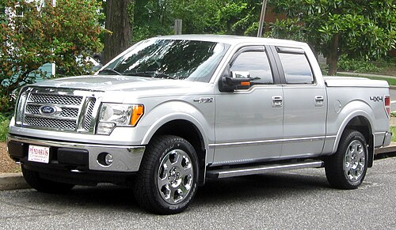
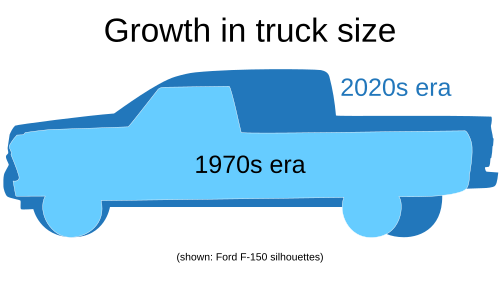
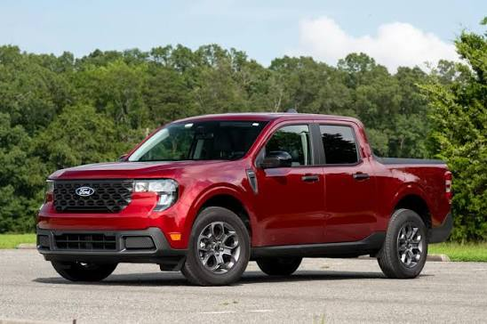
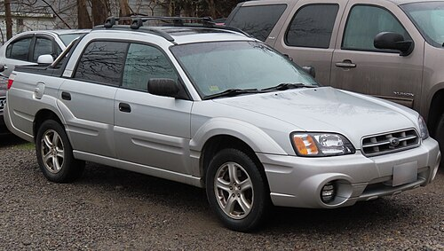
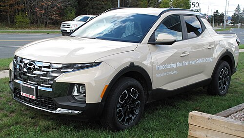
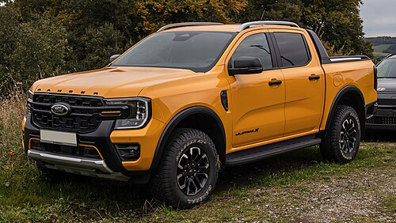
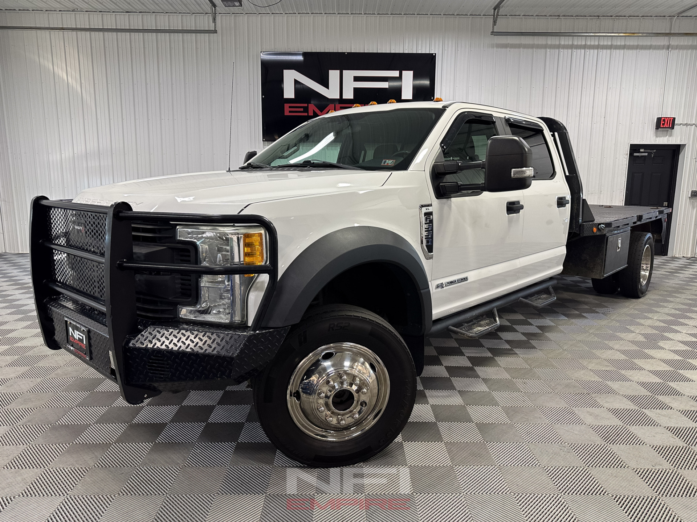

A pickup truck or pickup is a light-duty truck that has an enclosed cabin, and an open cargo area with low sides and a tailgate. In Australia and New Zealand, both pickups and coupe utilities are called utes, short for utility vehicle. In South Africa, people of all language groups use the term bakkie, a diminutive of bak, Afrikaans for "bowl" or "container".

Mini pickups are the smallest class of pickup trucks, and are often based on the platforms of B-segment or C-segment passenger cars, or subcompact or compact crossovers.
Mini pickups are also known as coupe utilities or utes, particularly in Australia and New Zealand.

Compact pickups are a class of pickup trucks that are smaller than mid-size pickups. Compact pickups are typically built on a ladder frame chassis, although some models have been built on a unibody chassis.
Compact pickups were introduced to the North American market in the 1960s by Japanese manufacturers, and they quickly became popular due to their low price and good fuel economy.



Mid-size pickups are a class of pickup trucks that are larger than compact pickups, but smaller than full-size pickups.
The term "mid-size pickup" is primarily used in North America, while in other regions these vehicles are often simply referred to as "pickups" or "1-ton pickups". Mid-size pickups are popular worldwide, and many models are produced globally.

Full-size pickups are a class of pickup trucks that are larger than mid-size pickups. Full-size pickups are primarily sold in North America, where they are extremely popular.
Full-size pickups are typically available in a wide variety of configurations, including different cab styles (regular, extended, and crew cab), bed lengths, and powertrain options.

In Malaysia, the pickup truck market is dominated by mid-size (1-ton) models. They range from basic workhorses to premium lifestyle vehicles:
Pickup trucks offer unparalleled cargo hauling capabilities, making them essential for heavy-duty work and extreme utility:
Pickups are engineered to be tough, with a focus on enduring harsh conditions, heavy loads, and long-term reliability.